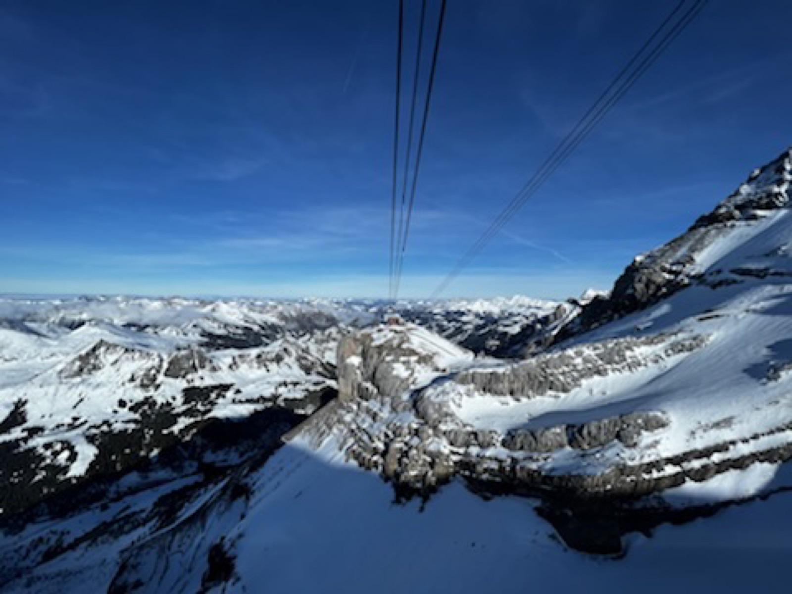
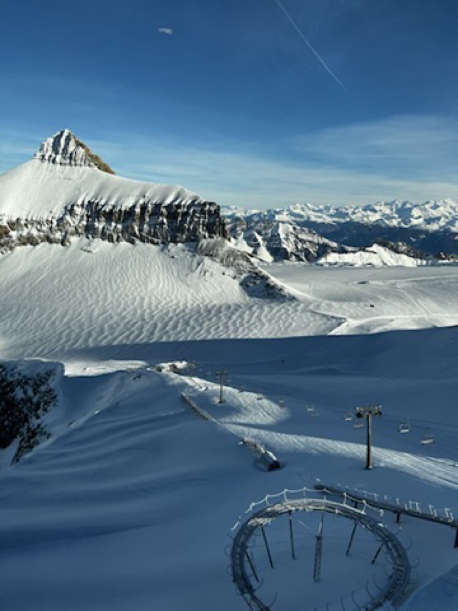
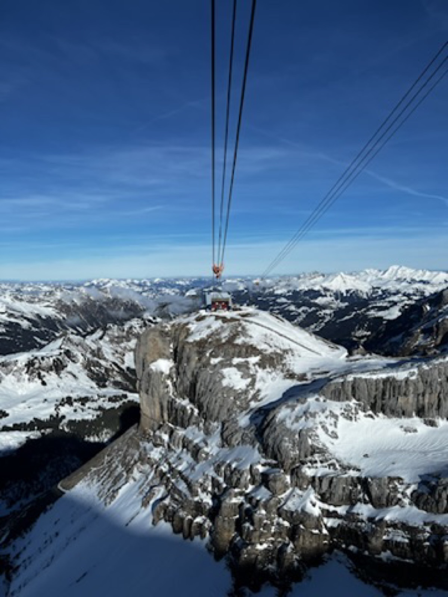
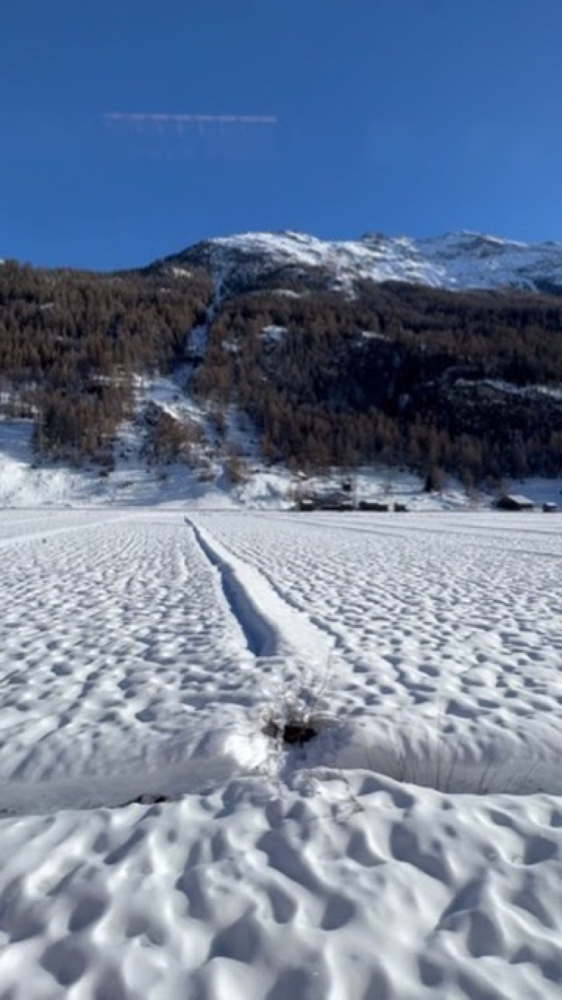
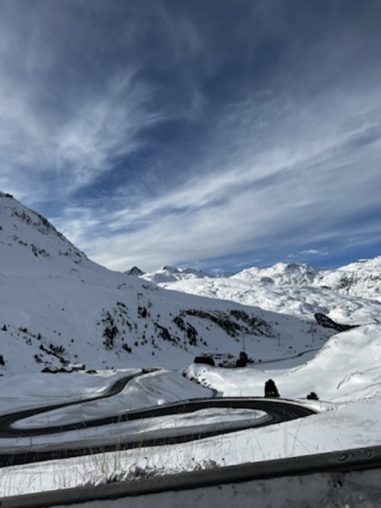
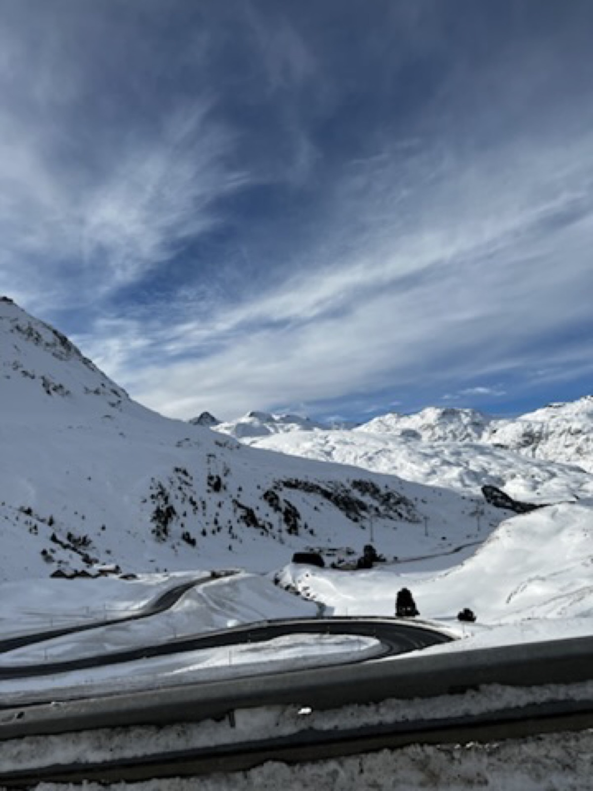
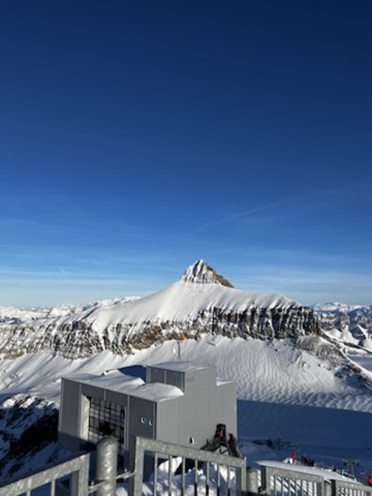
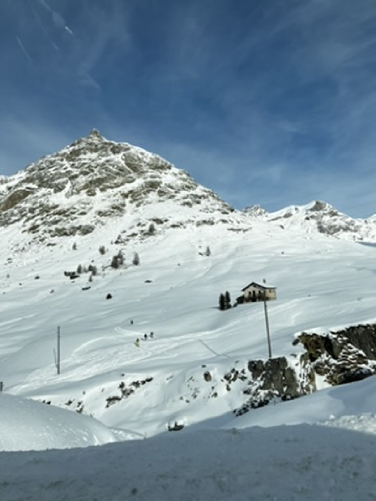

Velogemel and sunrise carried the trip
The alpine parts gave the route its clearest emotional value: snow, cable rides, sledding energy, and that early light around Zermatt.
Switzerland / 27 Dec 2021 - 8 Jan 2022
A compact alpine winter note from Zurich, Bern, Zermatt, St Moritz, and Poschiavo, built around snow views, Velogemel, Zermatt sunrise, Glacier Express movement, and one very clear New Year lodging lesson.
This is not a complete Switzerland guide. It is the version I would keep as a practical memory: beautiful alpine days, a few city bases, and a reminder that winter travel gets much harder when lodging and luggage are treated casually.

The beautiful parts were easy to remember. The useful part was even clearer: winter Switzerland rewards early planning, especially around New Year.
The route moved from Zurich to Bern, then into Zermatt, St Moritz and Poschiavo before returning to Zurich. It was snowy, scenic, and very Swiss in the best and most expensive ways.
The trip’s strongest memories were simple: Velogemel in the snow, Zermatt sunrise, and the feeling of moving through the Alps by cable car, rail, and winter road.
The alpine parts gave the route its clearest emotional value: snow, cable rides, sledding energy, and that early light around Zermatt.
The Zermatt hotel cancellation turned into a useful travel lesson: book winter lodging early, especially around New Year, and think hard about luggage before choosing a place with stairs.
Choose a Chapter

City bases before the AlpsZurich and Bern as practical winter starting points.

Glacier 3000Snow, height, and a route that starts feeling properly alpine.

Velogemel rhythmThe memory that still feels the most fun.

Zermatt sunriseOne of the clearest reasons this route stayed memorable.

Glacier Express movementThe route stretched into St Moritz and Poschiavo.

Poschiavo baseA quieter practical base after the bigger-name stops.
Zurich + Bern
Zurich and Bern worked as winter base chapters before the trip moved deeper into the mountains. The notes here are more route texture than complete city guides: Old Town walks, Christmas market atmosphere, lake and landmark stops, and enough food names to remember the rhythm.
Zurich held places like Old Town, Grossmunster, Lake Zurich, Fraumunster, Illuminarium at the National Museum, and The Nest at Storchen Zurich. Bern added Bear Pit, Einstein Haus, Kunstmuseum, Berner Munster, Zytglogge, Bundeshaus, and Christmas market energy.
Glacier 3000 + Grindelwald First
This is where the trip became less about cities and more about winter activity. Glacier 3000 brought the high-altitude feeling through the Peak Walk by Tissot, glacier walking, the Ice Cathedral, and snow play. Grindelwald and First added the more playful side: sledging, Velogemel, and mountain movement.

Zermatt
Zermatt was the chapter with the strongest emotional image: sunrise, snow, and that clean alpine quiet before the day fills up. The route notes include town time, Matterhorn Museum, Gornergrat Railway, Gornergrat Observatory, and possible mountain-side plans around Glacier Palace, Sunnegga, and Wolli's Park.
St Moritz + Poschiavo
The route continued by Glacier Express toward St Moritz, then settled into the St Moritz and Poschiavo side of the trip. The notes here stay practical: Muottas Muragl, snowshoeing, Lake St Moritz, Corviglia and Piz Nair, and Poschiavo as a quieter base.

Final Takeaway
Europe Winter 2021/22 is worth keeping on NutNibbles because it adds a sharper planning angle than the 2020 Europe route. This one is more Switzerland-heavy, more alpine, and more useful as a reminder that winter beauty comes with lodging pressure, luggage friction, and very real cost.
The version I would recommend is not to copy every stop blindly. Keep the alpine highlights, book New Year stays early, and leave enough breathing room so the snow days can feel like memories instead of logistics.